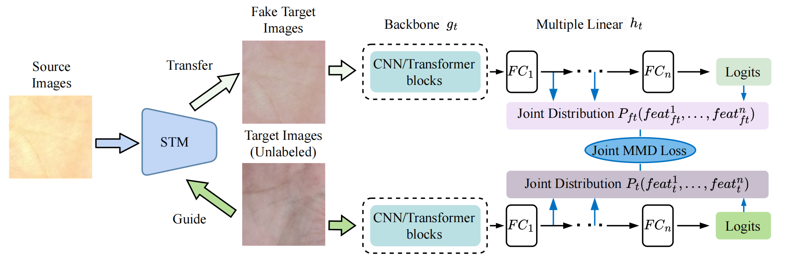

Song Ruan 阮松
Email:ruansong@ctbu.edu.cn
I am a Lecturer at Chongqing Technology and Business University.
I received my PhD degree from the College of Computer Science at Chongqing University in 2026.
Education
[2024.11 - 2025.11] Visiting PhD Student, The University of Western Australia (UWA), Perth, Australia
[2022.09 - 2026.06] PhD Student, Chongqing University (CQU), Chongqing, China
[2020.09 - 2022.09] Master Student, Chongqing University (CQU), Chongqing, China
[2016.09 – 2020.06] Bachelor's Degree in Automation, Wuhan University of Technology (WHUT), Hubei, China
Research Summary
My research focuses on improving the generalization ability and robustness of identity recognition systems based on palmprint and palm-vein images.
Main challenges include domain shifts caused by various sensor and lighting conditions, biometric template protection, and defense against adversarial attacks.
Publications
* indicates supervisor, † indicates corresponding authorship

SPA: Stable and Precise Alignment for Efficient Cross-Domain Palmprint Recognition
Song Ruan, Yantao Li*†,
Huafeng Qin†, Naeha Sharif,
Farid Boussaid, Mohammed Bennamoun.IEEE Transactions on Information Forensics and Security (TIFS), May 2026
[Paper]

PromptPalm: Textual Prompt Template Substitution for Privacy-Preserving Palmprint Recognition
Song Ruan, Yantao Li*†,
Huafeng Qin†.IEEE International Conference on Multimedia and Expo (ICME), Mar 2026

LSFM: Light Style and Feature Matching for Efficient Cross-Domain Palmprint Recognition
Song Ruan, Yantao Li*†,
Huafeng Qin†.IEEE Transactions on Information Forensics and Security (TIFS), Oct 2024
[Paper]

Transformer based Defense GAN Against Palm-vein Adversarial Attacks
Yantao Li*, Song Ruan,
Huafeng Qin†,
Shaojiang Deng,
Mounim A. El-Yacoubi.IEEE Transactions on Information Forensics and Security (TIFS), Jan 2023
[Paper]
Awards and Honors
- [2024.01] Top 10 Outstanding Teaching Assistant of Chongqing University
Reviewer
- IEEE IOTJ, IEEE TIFS, AAAI2026, ICME2026